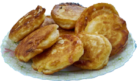
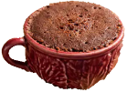
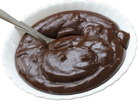

Bolinho de chuva
- 2 unidades de ovo
- 3 colheres de açúcar refinado
- 1 xícara de leite
- 2 e 1/2 xícaras de farinha de trigo com fermento
- Canela-da-china em pó a gosto
Misture todos os ingredientes. O ponto é um pouco mais grosso que uma panqueca, mas ainda cremoso. Frite dos dois lados em uma frigideira antiaderente. Você pode salpicar canela e açúcar no final.

Bolo de xícara
- 1 ovo
- 3 colheres de manteiga
- 4 colheres de açúcar
- 4 colheres de leite
- 3 colheres de farinha de trigo com fermento
Coloque a manteiga numa tigela média e leve ao micro-ondas para derreter por 30 segundos, adicione o leite e o ovo, o açúcar e a farinha. Misture até que a massa fique lisa. Coloque em uma xicara que possam ir ao micro-ondas. Colocar até a metade da xicara para não transbordar. Leve ao micro-ondas por 3 minutos.

Brigadeiro de Colher
- 1 lata de leite condensado
- 2 colheres de sopa de margarina
- 4 colheres de sopa de chocolate em pó
Coloque a margarina dentro de uma panela e deixe ela derreter. Adicione o chocolate. Junte o leite condensado e mexa até formar uma calda grossa. Deixe esfriar por alguns minutos e sirva.